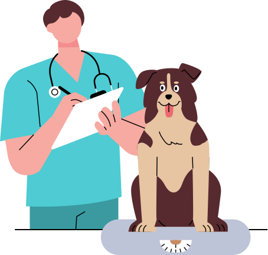
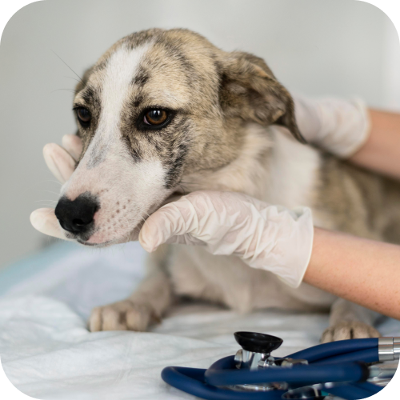
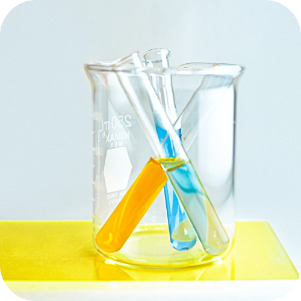

<!DOCTYPE html>
<html lang="zh-tw">
  <head>
    <meta charset="UTF-8" />
    <meta name="viewport" content="width=device-width, initial-scale=1.0" />
    <title>診療項目 | 毛豆動物醫院</title>
    <link href="./img/logoico.ico" rel="icon">
    <link rel="preconnect" href="https://fonts.googleapis.com">
    <link rel="preconnect" href="https://fonts.gstatic.com" crossorigin>
    <link href="https://fonts.googleapis.com/css2?family=Montserrat:wght@100;200;300;400;500;600;700;800;900&family=Noto+Sans+TC:wght@100;300;400;500;700;900&display=swap" rel="stylesheet">
    <link rel="stylesheet" href="css/reset.css" />
    <link rel="stylesheet" href="css/base.css" />
    <link rel="stylesheet" href="css/header_footer.css" />
    <link rel="stylesheet" href="css/medical.css" />
  </head>
</html>

<body>
    <!-- 頂部 導覽列 -->
    <header class="page-header-fixed">
      <div class="nav">
        <a class="nav-logo" href="index.html">
          
          </img>
          </a>
        <!-- nav-toggler -->
        <div class="nav-toggler">
          <svg class="ham hamRotate ham4" viewBox="0 0 100 100" width="80" onclick="this.classList.toggle('active')">
            <path
                  class="line top"
                  d="m 70,33 h -40 c 0,0 -8.5,-0.149796 -8.5,8.5 0,8.649796 8.5,8.5 8.5,8.5 h 20 v -20" />
            <path
                  class="line middle"
                  d="m 70,50 h -40" />
            <path
                  class="line bottom"
                  d="m 30,67 h 40 c 0,0 8.5,0.149796 8.5,-8.5 0,-8.649796 -8.5,-8.5 -8.5,-8.5 h -20 v 20" />
          </svg>
        </div>
        <div class="nav-dropdown-menu">
          <ul class="nav_text col-m-10">
            <li><a class="nav_text_line " href="introduction.html">醫院介紹</a></li>
            <li><a class="nav_text_line " href="medical.html">診療項目</a></li>
            <li><a class="nav_text_line " href="booking.html">診療預約</a></li>
            <li><a class="nav_text_line " href="liveomg.html">病房即時影像</a></li>
            <li><a class="nav_text_line " href="content.html">聯絡我們</a></li>
            <li>
              <a class="memberIcon" href="#">
                <svg
                  width="25"
                  height="25"
                  viewBox="0 0 25 25"
                  fill="none"
                  xmlns="http://www.w3.org/2000/svg"
                >
                  <path
                    d="M12.1094 0C5.41992 0 0 5.41992 0 12.1094C0 18.7988 5.41992 24.2188 12.1094 24.2188C18.7988 24.2188 24.2188 18.7988 24.2188 12.1094C24.2188 5.41992 18.7988 0 12.1094 0ZM12.1094 4.6875C14.4824 4.6875 16.4062 6.61133 16.4062 8.98438C16.4062 11.3574 14.4824 13.2812 12.1094 13.2812C9.73633 13.2812 7.8125 11.3574 7.8125 8.98438C7.8125 6.61133 9.73633 4.6875 12.1094 4.6875ZM12.1094 21.4844C9.24316 21.4844 6.6748 20.1855 4.95605 18.1543C5.87402 16.4258 7.6709 15.2344 9.76562 15.2344C9.88281 15.2344 10 15.2539 10.1123 15.2881C10.7471 15.4932 11.4111 15.625 12.1094 15.625C12.8076 15.625 13.4766 15.4932 14.1064 15.2881C14.2188 15.2539 14.3359 15.2344 14.4531 15.2344C16.5479 15.2344 18.3447 16.4258 19.2627 18.1543C17.5439 20.1855 14.9756 21.4844 12.1094 21.4844Z"
                  />
                </svg>
              </a>
            </li>
          </ul>
        </div>
      </div>
    </header>
    
    <!-- <p class="scroll_text">SCROLL</p> -->
    
    <!-- 內容star -->
    <div class="hosTitle">
      <h1 class="headerTitle">診療項目</h1>
      
    </div>

<main>
  
  <!-- --------- 一般門診 --------- -->
  <section class="outpatient" id="outpatient">
    <div class="container">
      
      <h2 class="medicalH2" >一般門診</h2>
      <div class="outpatientBox col-m-10 mg-auto">
        
          <ul class="outpatientItems col-m-8 col-s-12">
            <li><div class="outpatient_Icon"></div><span>皮膚科</span></li>
            <li><div class="outpatient_Icon"></div><span>牙科</span></li>
            <li><div class="outpatient_Icon"></div><span>腫瘤科</span></li>
            <li><div class="outpatient_Icon"></div><span>心臟科</span></li>
            <li><div class="outpatient_Icon"></div><span>內科</span></li>
            <li><div class="outpatient_Icon"></div><span>眼科</span></li>
            <li><div class="outpatient_Icon"></div><span>骨科</span></li>
            <li><div class="outpatient_Icon"></div><span>神經科</span></li>
          </ul>    
      </div>
    </div>
  </section>

  <!-- --------- 外科手術 --------- -->
  <section class="container surgery" id="surgery">

        
        <h2 class="medicalH2">外科手術</h2>

      <!-- 絕育手術 -->
        <div class="sterility">
          <div class="medical_title">
            <h3 class="medical_h3">絕育手術</h3>
            <p>從出生後 6 個月左右既可開始評估</p>
          </div>
          <div class="sterility_content col-m-10 mg-auto">
            <div class="surgery_box col-7 col-m-8 sterility_list col-s-12">
              <ul>     
                <li class="items_text">
                  <div class="sterility_items girl">
                    
                  </div>
                    <h4 class="medical_h4">母犬貓</h4>
                    <p>優點：預防乳腺腫瘤、子宮及卵巢疾病等<br>風險：容易肥胖、增加骨關節疾病風險</p>
                </li>
                <li class="items_text">
                  <div class="sterility_items boy">
                    
                  </div>
                    <h4 class="medical_h4">公犬貓</h4>
                    <p>優點：標記預防、性格穩定、預防腺體肥大和睾丸疾病等<br>風險：容易肥胖、增加骨關節疾病風險</p>
                </li>
                <span class="smText">※在大型犬中，手術後數年可能會發生漏尿<br>
                      ※術前檢查（費用）因寵物的年齡和體重而異</span>
              </ul>
            </div>

            <div class="bggSquare"></div>

            <div class="surgery_box col-5 col-m-4 col-s-12">
              <div class="price textM">價目表</div>
                <ul class="price_item">
                  <li>
                    <h4 class="medical_h4">母犬貓</h4>
                    <p><span class="itemTextB">絕育手術</span> 2,500元</p>
                  </li>
                  <li>
                    <h4 class="medical_h4">公犬貓</h4>
                    <p><span class="itemTextB">絕育手術</span> 1,500元</p>
                  </li>
                </ul>
            </div>
          </div>
        </div>

      <!-- 牙周治療 -->
        <div class="tooth">
          <div class="medical_title">
            <h3 class="medical_h3">牙周治療</h3>
            <p>需要全身麻醉</p>
          </div>
          <div class="tooth_content col-m-10 mg-auto ">
            <div class="surgery_box col-7 col-m-8 tooth_box col-s-12">
              <p>清除所有牙齦下的牙結石與牙菌斑，必要時需要切開牙齦，清潔牙根處牙菌斑與結石（牙根整平），或甚至做齒槽骨整形等進階手術治療。 拍攝全口X光，尋找是否有牙根處病灶或早期的齒槽骨流失。 若有需要，會使用牙齦下塗藥，或牙周病藥物治療。</p>
            </div>
            <div class="surgery_box col-5 col-m-4 tooth_box col-s-12">
              <div class="price textM">價目表</div>
              <ul>
                <li><span class="itemTextB">去除牙垢</span> 3,500元起</li>
                <span class="smText">※手術費用會因寵物的年齡和體重而異<br>
                      ※如果需要拔牙或翻瓣手術，將產生額外費用</span>
              </ul>
            </div>
          </div>
      </div>

        <!-- 其他手術 -->
        <div class="other_surgery">
          <div class="medical_title">
            <h3 class="medical_h3">其他手術</h3>
          </div>

            <ul class="other_content surgery_box col-m-10 mg-auto">
                <li class="other_list">
                    <h4>頭部</h4>
                    <p>摘除術、結膜/眼瞼成形術、眼瞼腫塊切除術/眼瞼成​​形術、耳廓切除術、全耳道切除術/囊切開術、口腔腫塊切除術</p>
                </li>
                <li class="other_list">
                    <h4>頸部</h4>
                    <p>甲狀腺腫塊切除術、永久性氣管切開術</p>
                </li>
                <li class="other_list">
                    <h4>胸部</h4>
                    <p>肺葉切除術</p>
                </li>
                <li class="other_list">
                    <h4>腹腔</h4>
                    <p>肝腫塊切除術、膽囊切除術、胃切開術、腸切開術/吻合術、脾切除術腎切除術、腎上腺腫塊切除術、膀胱腫塊切除術、膀胱取石術臍疝修補術、腹股溝疝修補術</p>
                </li>
                <li class="other_list">
                    <h4>皮膚</h4>
                    <p>皮膚腫塊切除術，皮瓣，會陰部尿道瘻管，陰道腫塊切除術，尾部對接會陰疝縮小術</p>
                </li>
                <li class="other_list">
                    <h4>骨科</h4>
                    <p>腕骨骨折復位、橈骨骨折復位、頭部切除、髖關節脫位複位、前交叉韌帶斷裂、內側髕骨脫位、踝關節脫位</p>
                </li>
            </ul>
        </div>
  </section>

<!-- -- preventive , 24H , care -- -->
<section class=" p-24H">
  
  <!--  預防疫苗  -->
  <div class="container" id="preventive">
    <div class="col-9 col-m-8 col-xs-10 preventive">
      <div class="preventive_title">
        
        <h2 class="medicalH2">預防疫苗</h2>
        <p>醫院建議接種疫苗和採取其他預防措施。預防絲蟲病，預防跳蚤和蜱蟲引起的疾病也很重要。</p>
      </div>
    <div class="preventive_box">
      <div class="price yellowPrice textM">價目表</div> 
        <ul>
          <li class="preventive_list">
            <div class="preventive_icon"></div>
            <h4 class="medical_h4">犬</h4>
            <p><span class="itemTextB">6種混合疫苗</span>2,500元<br><span class="itemTextB">10種混合疫苗</span>3,500元</p>
          </li>
          <hr>
          <li class="preventive_list">
            <div class="preventive_icon"></div>
            <h4 class="medical_h4">貓</h4>
            <p><span class="itemTextB">3-5種混合疫苗</span>2,500元</p>
          </li>
        </ul>
      </div>
    </div>
  </div>

  <!--  24H急診  -->
  <div class="urgent " id="urgent">
    <div class="urgent_box col-10">

      <div class="urgent_box_text col-4 col-m-5 col-s-8 col-xs-10">
          
          <h2 class="medicalH2">24H急診</h2>
          <p>因急病，請來電諮詢我們。我們也照顧生病需要即時藥物或註射的寵物。如果沒有病史，我們將會在拘留時進行一般身體檢查。如果需要額外的檢測，我們也可以一起做。</p>  
      </div>

      
    
    </div>
    
    <div class="urgent_bg col-8 col-m-12"></div>
  </div>

  <!-- --------- 臨終關懷 --------- -->
  <div class="care" id="care">
    
    <div class="care_box col-3 col-m-4 col-s-8">
      
      <h2 class="medicalH2">臨終關懷</h2>
      <p>從開始到結束一起在家<br>
      獸醫也在老化。更長的預期壽命可能需要長期護理。如果疼痛難以忍受，也可以選擇安樂死作為治療的一部分。如果患者從來沒有來過我們醫院，我們會請您直接來醫院，直接確認患者的情況後再做決定。</p>
    </div>
  </div>
</section>

<!-- --------- 其他檢查 --------- -->
  <div class="bg-brR280">

    <section class="container">
      <div class="check col-11 col-m-10">
        <div class="check_content col-6 col-m-7 col-s-8 col-xs-12">
          
          <h2 class="medicalH2">其他檢查</h2>
          <h4 class="medical_h4">血液・尿・糞便檢查</h4>
          <p>尿液檢查可以使用導尿管或膀胱穿刺來收集尿液，但最好自帶尿液，因為這樣可以減輕患者的負擔。<br>
            醫院有尿液收集工具，但也可以使用未使用過的醬油罐等小容器。<br>
            由於有些疾病隨著時間的推移無法通過糞便檢查發現，因此最好在醫院收集糞便。</p>
        </div>
        <div class="">
          
        </div>
      </div>

  <!-- --------- 健康檢查 --------- -->
      <div class="healthy col-11 col-m-10" id="healthy">
        <div class="healthy_title">
          
          <h2 class="medicalH2">健康檢查</h2>
          <p>我們建議定期為毛孩做健康檢查，毛豆動物醫院供小型健檢以及年度檢查方案。</p>
        </div>
        <div class="healthy_box mb32">
        <div class="healthy_items col-6 col-s-12">
          <h5 class="smTag mb32">小型健檢</h5>
          <p class="mb32">這是一個短期和高效篩選的健檢，<br>
            推薦給想要進行簡單健康檢查的人。</p>
          <ul>
            <li class="healthy_list">
              <h4>檢查項目</h4>
              <p>體格檢查、血液全血檢查、血液生化檢查（10項）、尿檢、大便檢查、X光檢查（胸部/腹部）、傳染病快篩</p>
            </li>
            <li class="healthy_list">
              <h4>所要時間</h4>
              <p>約1小時，當日公佈結果</p>
            </li>
            <li class="healthy_list">
              <h4>診斷費用</h4>
              <p>3,000元 ~ 5,000元</p>
            </li>
          </ul>
        </div>
        <div class="healthy_items col-6 col-s-12">
          <h5 class="smTag mb32">年度健檢</h5>
          <p class="mb32">我們的1年等於貓狗的7年，<br>
            所以定期帶寵物做健康檢查很重要。</p>
          <ul>
            <li class="healthy_list">
              <h4>檢查項目</h4>
              <p>包含小型健檢外，增加胸腔、腹腔X光（正、側照共4張），心髒病和腹腔內腫瘤疾病的超音波檢查、全血細胞計數（5分類）</p>
            </li>
            <li class="healthy_list">
              <h4>所要時間</h4>
              <p>半天左右，稍後公佈結果</p>
            </li>
            <li class="healthy_list">
              <h4>診斷費用</h4>
              <p>10,000元</p>
            </li>
          </ul>
        </div>
      </div>
        <p class="smText">※ 健檢結果單會儲存至網站會員系統，讓醫師與主人隨時掌握毛孩的健康進度。<br>
                          ※ 體檢前必須禁食12小時。</p>
      </div>
    </section>
  </div>
</main>


<div class="bigSurgeryBox">
  <!-- <div class="bggSquare"></div> -->
  <div class="bggCircle"></div>
</div>


<!--  footer  -->
<footer>
  <div class="footer-container ">
    <div class="footer-wrapper container">
      <div class="footer-box col-11">
        <div class="footer-logo col-3">
          <a href="index.html"></a>
          <a href="index.html"></a>
          <span class="footer-sm-text">©毛豆動物醫院 2023</span>
        </div>
        <div class="footer-time col-5 col-m-6 col-s-10">
          <p><span class="footer-time-text">一・五</span>09:30-14:00 / 15:00-19:00</p>
          <p><span class="footer-time-text">六</span>09:00-13:00 / 14:00-18:00</p>
          <p><span class="footer-time-text">日・三</span>休診</p>
          <span class="footer-sp-text">特殊營業日參照最新消息</span>
        </div>
        <div class="footer-info col-4 col-m-5 col-s-7">
          <p class="footer-phone">TEL : 0800-358-988</p>
          <p class="footer-map">捷運南京復興站</p>
          <p class="footer-map-smText">松山新店線・文湖線・8號出口<br>
            台北市中山區南京東路三段219號5樓</p>
          <p class="footer-smText">本網站為緯育TibaMe【第85期】前端工程師專業技術養成班學員作品，僅供學習、展示之用途。</p>
        </div>
      </div>
    </div>
  </div>
</footer>

  
    <script src="https://cdnjs.cloudflare.com/ajax/libs/jquery/3.2.1/jquery.min.js"></script>
    <script src="./js/index.js"></script>
</body>
</html>